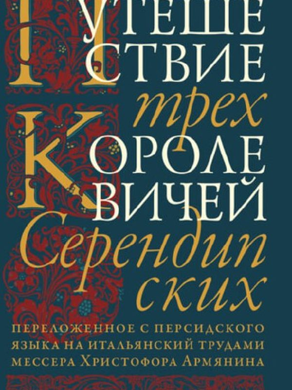

КнигиПутешествие трёх королевичей Серендипских
Старинная восточная сказка в итальянском переложении — та самая история, из которой родилось слово «серендипити»: искусство неожиданных открытий.
Зачем нам: Серендипити — про умение замечать то, чего не искал. Ровно это тренирует художественная практика.